一、BSW概述
1.1 什么是BSW
BSW（Basic Software，基础软件层）是 AutoSAR 分层架构中最下面的一大层。可以把 ECU 想象成一台电脑，BSW 的作用就相当于Windows 操作系统：它向下封装芯片硬件、向上给应用层软件（SWC）提供各种基础服务，让应用工程师不必关心底层硬件细节。
整个 BSW 位于 RTE 之下、硬件（Hardware）之上，它把 ECU 的硬件资源封装起来，通过统一的标准 API 向上层提供服务。下图标出了 BSW 在整个 AutoSAR 分层架构中的整体范围：
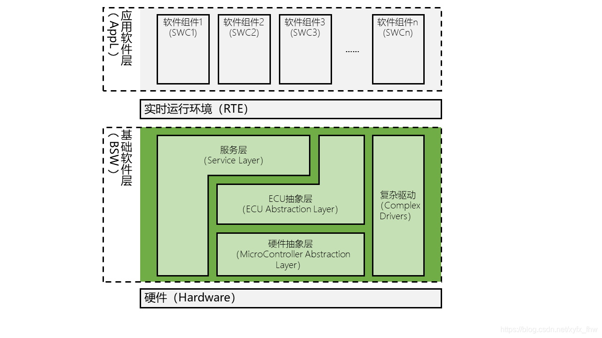
1.2 BSW的三层结构
BSW 内部自下而上又分为三层，每一层的封装对象不同：
（1）硬件抽象层（MCAL，MicroController Abstraction Layer）——最底层。它把主芯片内部的寄存器封装成 AutoSAR 规定的标准 API，好处是：上层模块只需要调用相同的 API，就能操作兼容的所有芯片，更换芯片时上层代码几乎不用改。它高亮显示如下：
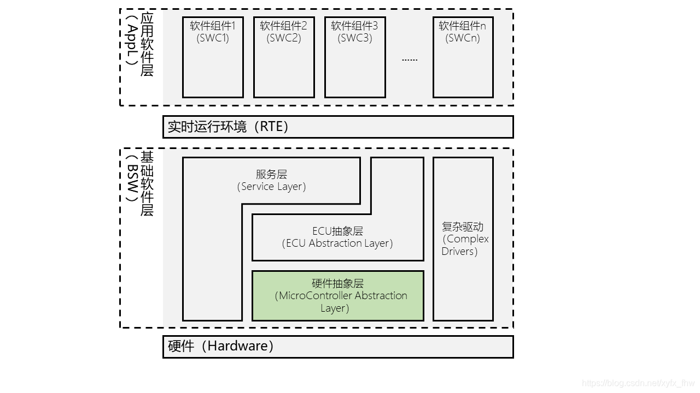
（2）ECU抽象层（ECU Abstraction Layer）——中间层。MCAL 只封装主芯片内部的资源，而 ECU 上除了主芯片还有外置存储器、外置看门狗等板载设备，ECU 抽象层负责把整个 ECU（含这些外置设备）封装起来；它对外提供统一接口，底层仍然需要调用 MCAL 来真正操作硬件：
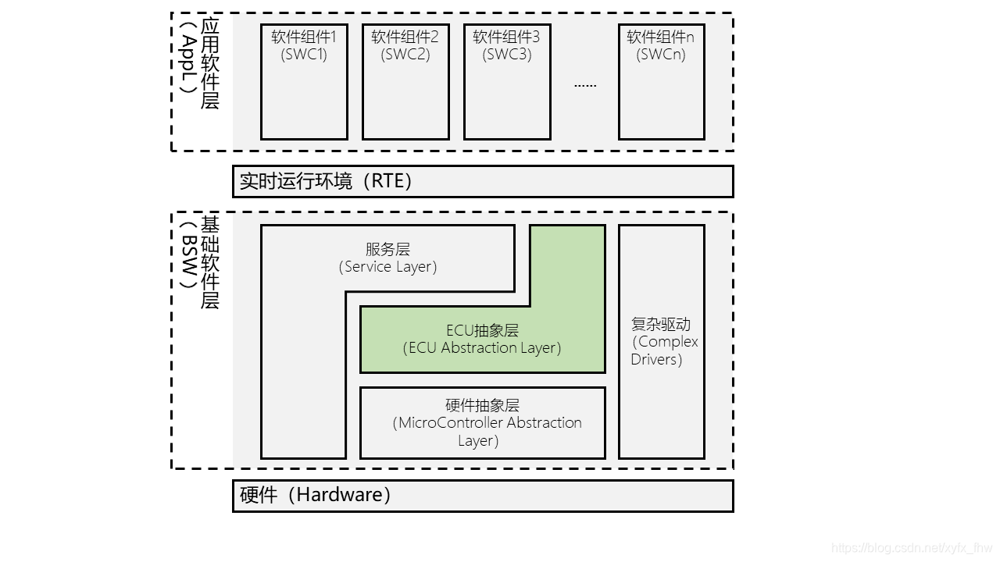
（3）服务层（Service Layer）——最上层。它把与硬件相关的功能进一步抽象成应用可用的服务，也是 BSW 中内容最多的一层：OS（操作系统）、诊断、存储管理（NVRAM）、看门狗管理、通信服务、调度管理、ECU 状态管理、通信通道管理等都属于服务层：
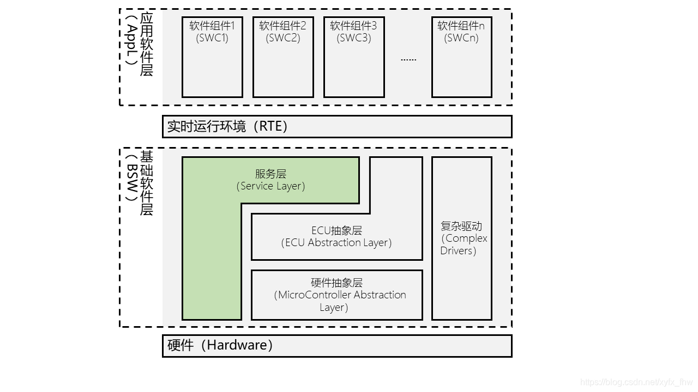
1.3 复杂驱动
BSW 里除了标准的三层结构，还有一个"另类"——复杂驱动（Complex Drivers）。它不属于三层中的任何一层，而是直接跨层实现，起补充作用：当某些功能对实时性要求极高、或芯片厂商提供了高度优化的专用驱动时，可以把它放进复杂驱动，直接从高层调用到底层硬件，绕过标准分层的层层封装：
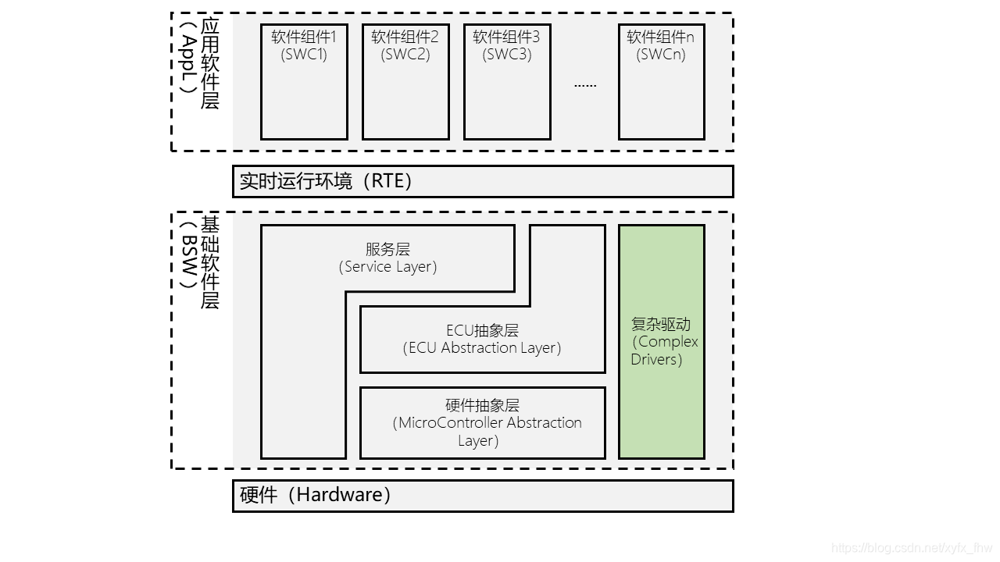
1.4 再将结构细分
把三层结构按功能再细分。下图最左侧是贯穿上下的系统服务，从左到右依次是板载功能、存储功能、通信功能、I/O 功能四个功能列（底部虚线框标出），最右侧还有贯穿三层的复杂驱动（紫色）：
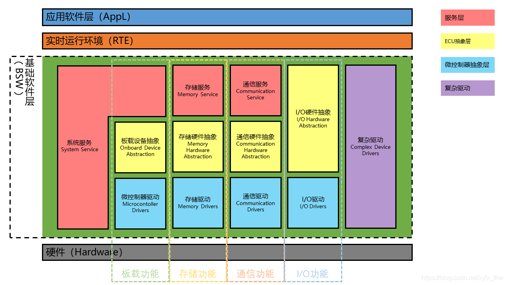
二、BSW的I/O功能
2.1 架构与术语解释
BSW 的 I/O 功能并不等于 GPIO。把 BSW 中与 I/O 相关的部分——I/O 硬件抽象（黄色，属 ECU抽象层）及其下方的 I/O 驱动（蓝色，属 MCAL）——放大来看，I/O 相关的模块包括：DIO（数字输入输出，就是单片机的 GPIO）、ADC（模数转换）、PWM（脉冲宽度调制）三类驱动，以及辅助模块 I/O Signal Interface（输入信号接口，负责输入信号的消抖处理）和 Driver for ext. ADC / I/O ASIC（外置 ADC、I/O 专用芯片的驱动，这些外置芯片经过 SPI 总线与主芯片相连，中间要经过 SPI Handler）：
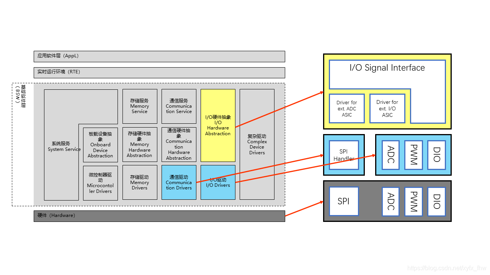
其中 IoHwAb（I/O 硬件抽象）需要手写代码：在 DaVinci 中申请一个 SWC，并把它声明为 IOHwAb 类型，然后在这个 SWC 中手写抽象逻辑，向上层屏蔽"信号到底来自片内 ADC 还是外置采样芯片"的细节。
2.2 举例：温度传感器
以车内环境温度的采集为例，把整条 I/O 数据链路走一遍：物理温度先由传感器感知（传感器阻值变化为 0.8kΩ），经过 ADC 采样电路转换成 0.5V 电压送入主芯片；进入软件世界后，MCAL 的 ADC 驱动通过 API Adc_ReadGroup() 读出采样值（12 位精度，最大 4095）；IoHwAb 通过 C/S 接口 Get_SensorValue() 把采样值换算成欧姆值；Sensor SWC 再算出实际温度，通过 S/R 接口 Send_Temperature() 发给 App SWC 使用：
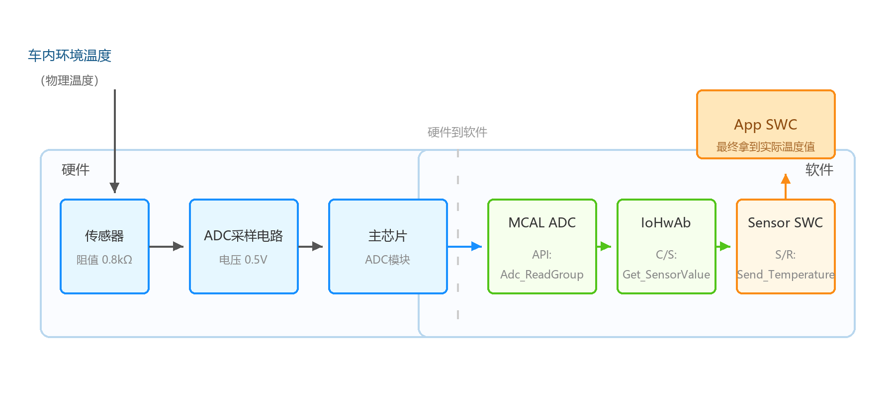
三、BSW的Communication功能
3.1 架构与术语解释
通信服务是 BSW 中最庞大的一块。从服务层的通信服务（红色）往下放大，主要模块有：
（1）COM——信号接口与网关：定义信号如何打包，数据内容由 DBC 或 ARXML 文件描述，还负责不同总线之间的网关路由；
（2）PDU Router——把"信号 ↔ PDU"分配到不同的协议总线上；
（3）IPDU Mux——解析 CAN FD 等特殊协议的复用；
（4）Bus Tp（如 CAN Tp）——把长报文分包传输并进行错误检测，诊断报文就靠它传输；
（5）Bus Interface（如 CAN Interface）——ECU抽象层的通信硬件抽象，配置收发队列、组帧和调度表；
（6）Bus Driver（CAN Driver）与 Trcv Driver——MCAL 层的收发器驱动，Trcv Driver 用于外置收发器。
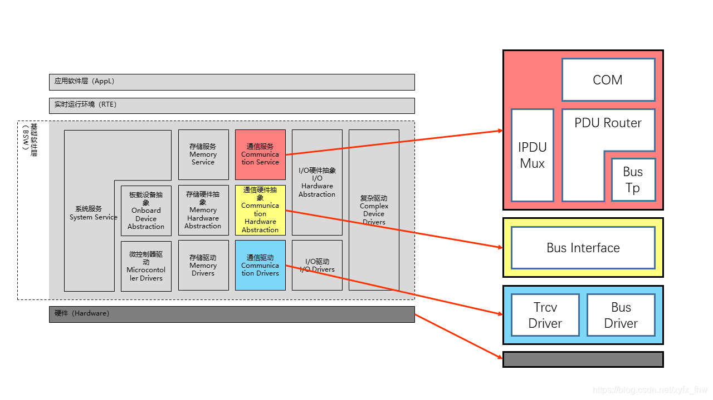
3.2 发送流程
应用层调用 Send 发送信号后，数据自上而下逐层流动：COM 把信号写入 PDU Buffer → PDU Router 决定立刻发送还是周期发送，并辨认数据要发到哪条总线 → Bus Interface 把 PDU 写入发送队列 → Bus Driver 按优先级从队列取出并最终发送到硬件总线上：
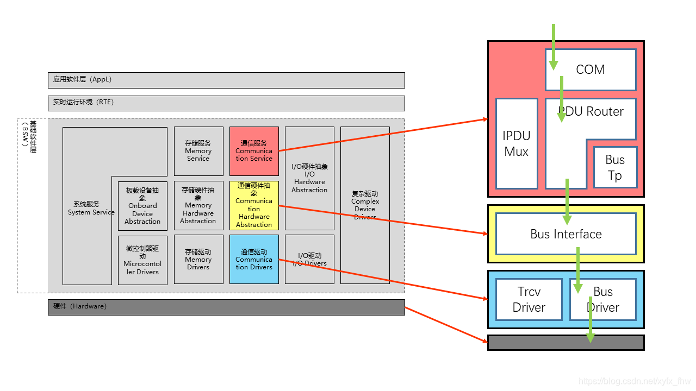
3.3 接收流程
接收方向的流程正好相反：硬件收到报文后，Bus Driver 产生 Rx 中断并触发 RxIndication → Bus Interface 接收 → PDU Router 上交给 COM：如果信号配置了"数据接收触发"（Data Reception Trigger），COM 直接通知 RTE 唤醒应用层；否则信号先暂存在 COM 的 Buffer 中，等应用层来取。最终数据经 RTE 交付给应用层 SWC：
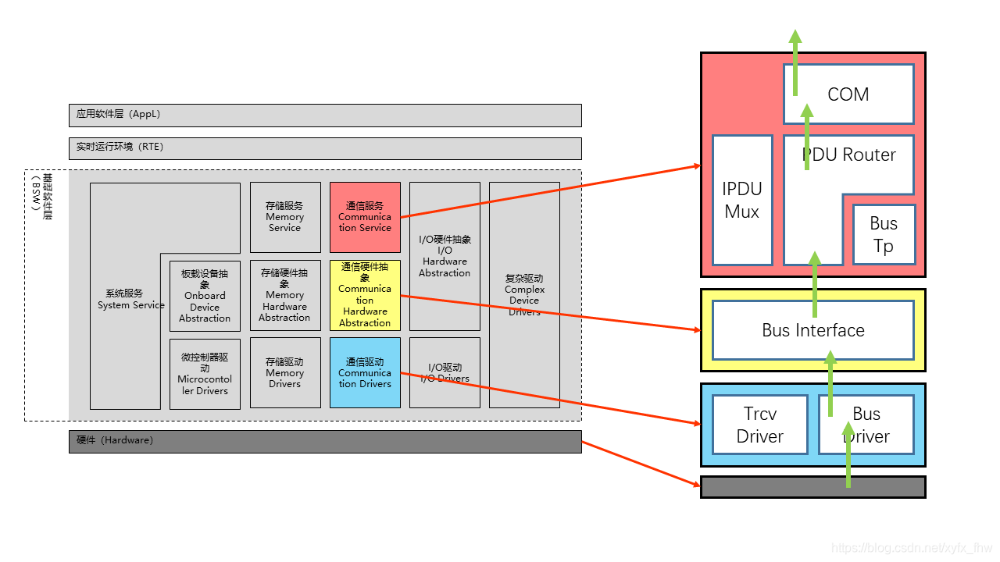
四、BSW的Memory功能
4.1 架构与术语解释
存储服务相关的 ROM 存储方式共有4 种：按"片内 / 片外"与"EEPROM / FLASH 仿 EEPROM"两个维度组合而成。其中 FLASH 只能按块擦写、不能按位修改，所以用 FLASH 仿 EEPROM 时要先备份数据 → 修改位 → 擦除整个块 → 再烧写回去。
从服务层的存储服务往下放大，主要模块有：NVRAM Manager（应用层访问非易失数据的唯一接口，数据按块编写管理）、Memory Abstraction Interface（把访问请求分派给 EEPROM 或 FLASH 两条路径）、EEPROM Abstraction 与 Flash EEPROM Emulation（两条抽象路径）、External E² Drv / Ext Fls Drv（片外存储驱动，位于 ECU 抽象层，经 SPI 访问外置芯片）、以及 MCAL 层的 SPI Handler Drv、EEPROM Drv、Flash Drv：
4.2 片内存储
片内存储指数据存在主芯片内部：EEPROM Abstraction 走 EEPROM Drv 直接访问主芯片内的 EEPROM；Flash EEPROM Emulation 走 Flash Drv 访问主芯片内的 FLASH（用 FLASH 模拟 EEPROM 的按位改写）。两条路径都不经过 SPI：
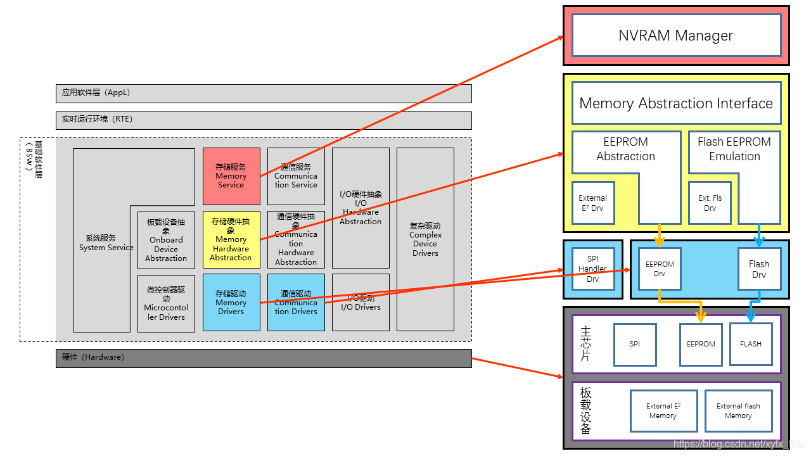
4.3 片外存储
片外存储指数据存在主芯片之外的板载设备上：External E² Drv / Ext Fls Drv 这两个驱动位于 ECU 抽象层，它们必须先经过 MCAL 层的 SPI Handler Drv，通过主芯片的 SPI 硬件接口，才能访问板载的 External E² Memory 或 External Flash Memory：
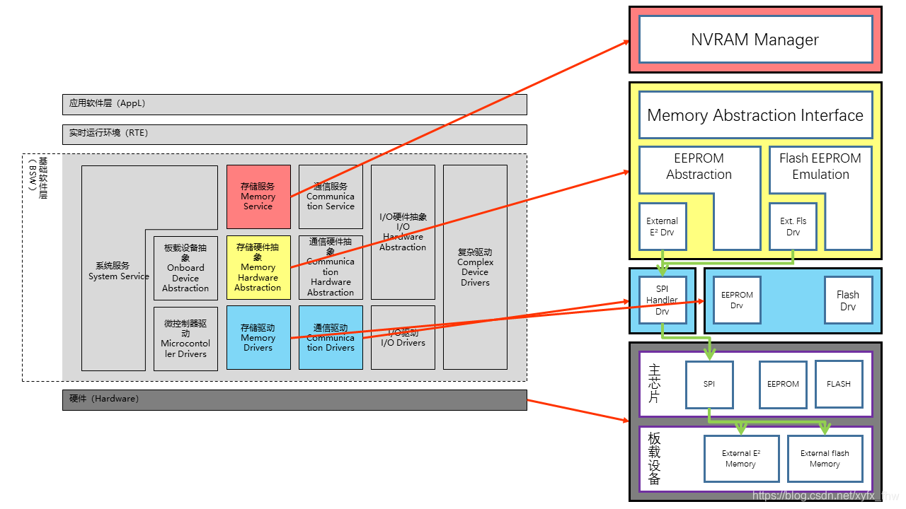
五、BSW的Mode Management功能
5.1 架构与术语解释
模式管理本质上就是状态管理：管理 ECU 的上电、下电、休眠，以及 CAN 通讯等功能的开启与关闭。相关模块全部位于系统服务层：
（1）EcuM（ECU State Manager）——负责 ECU 上下电、休眠、重启、唤醒验证 4 类功能；
（2）BswM（Basic Software Mode Manager）——基于"规则→动作"的模式仲裁者；
（3）ComM（COM Manager）——控制通信功能的启用与关闭；
（4）Nm + Bus NM——网络管理，负责总线唤醒、保持唤醒以及协调各节点一起关闭；
（5）Bus SM（如 CAN SM）——负责切换 CAN 等总线通信的开启与关闭（COM 位于其上一层）。
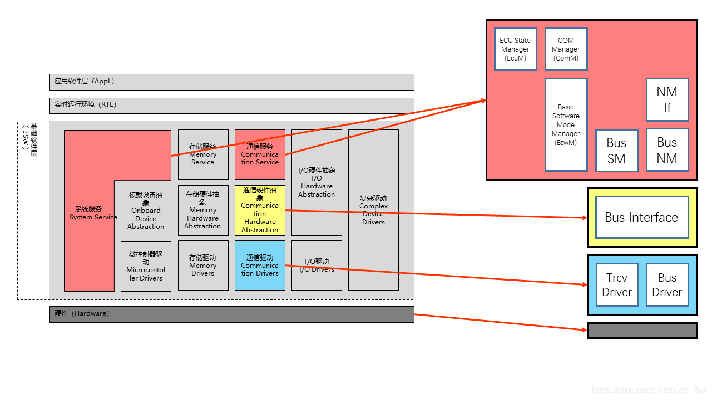
5.2 BswM规则配置
BswM 的工作方式是"规则→动作"：根据模式请求等条件判断规则，再执行相应动作。其中 Communication Control（通信控制）、Ecu State Handling（ECU 状态处理）、Module Initialization（模块初始化）三类规则由工具自动生成，用户自定义的规则则在 DaVinci 的 Miscellaneous 分支下添加（Rules 下包含 Mode Declaration Groups、Mode Switch Ports、Expressions、Actions、Action Lists 等配置项）：
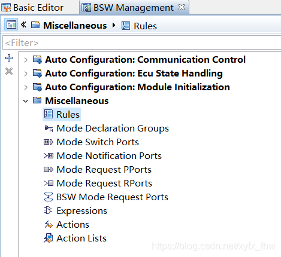
六、BSW的Watchdog功能
6.1 架构与术语解释
看门狗功能由三个模块组成一条简短的调用链：WdgM（Watchdog Manager，位于服务层）为应用层提供安全相关的监控服务；WdgIf（Watchdog Interface，位于 ECU 抽象层）负责统一触发硬件看门狗的接口；最底层是 MCAL 的 Wdg Drv（看门狗驱动），真正操作硬件看门狗：
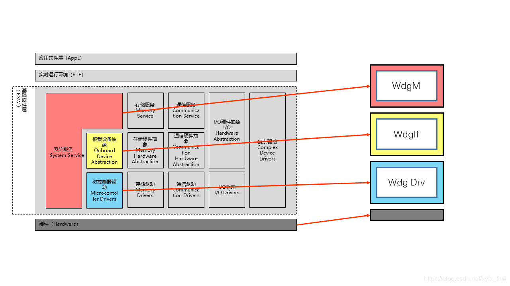
七、BSW的Diagnostics功能
7.1 架构与术语解释
诊断功能涉及服务层的三兄弟：
（1）FIM（Function Inhibition Manager，功能禁止管理）——当某些故障发生时，禁止相关功能运行。比如检测到过电流时关闭 MOS 管/IGBT 的输出，防止炸管；
（2）DEM（Diagnostic Event Manager，诊断事件管理）——管理故障事件，并负责把故障记录写入 EEPROM / Flash；
（3）DCM（Diagnostic Communication Manager，诊断通信管理）——处理诊断通信，也就是 UDS 协议（ISO 14229）的落地实现。
此外诊断报文的传输还要用到通信服务的 PDU Router、Bus Tp，故障数据的存储要经过 NVRAM Manager：
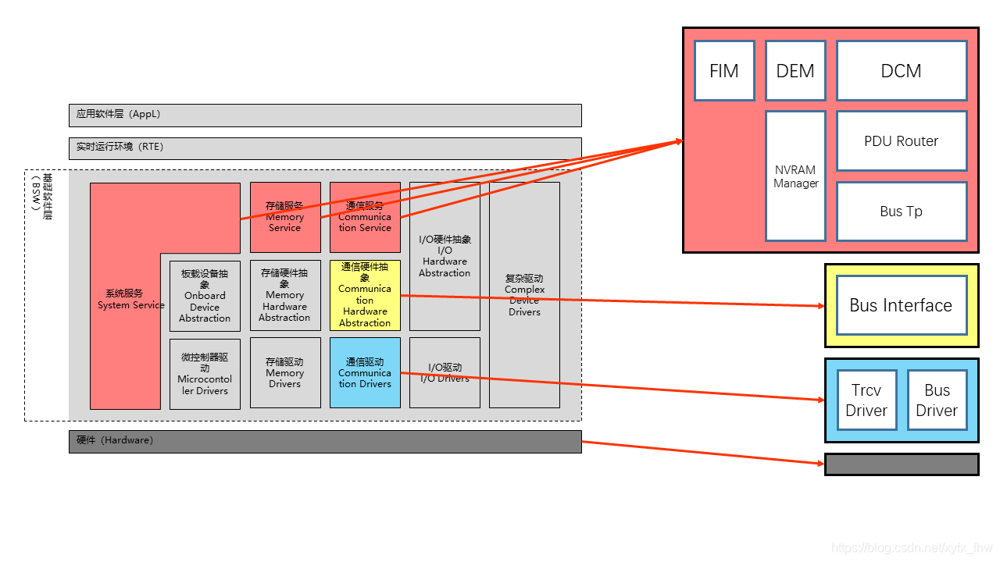
7.2 工作流程
诊断功能的日常工作流程有两条线：绿色箭头是故障的快速响应路径——应用层检测到故障后交给 DEM 判断，FIM 通过回调或轮询的方式获知故障状态，进而禁止相应 SWC 的功能运行（如过电流时立刻关断输出）；黄色箭头是故障的记录路径——DEM 把故障信息经 NVRAM Manager 写入 EEPROM / Flash，供售后读取分析：
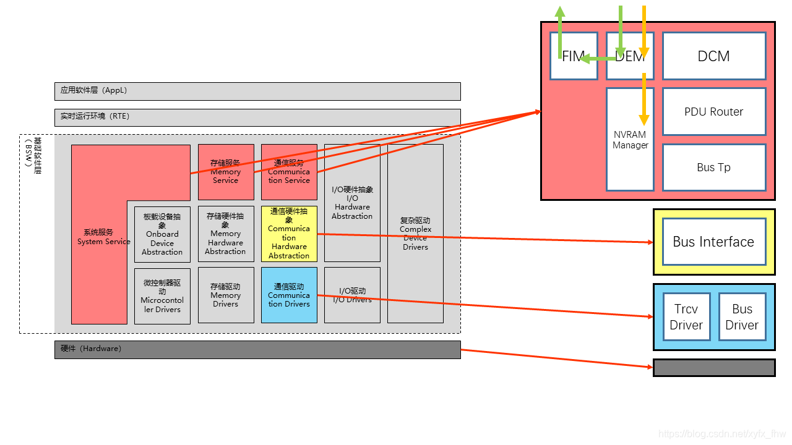
八、BSW的OS功能
8.1 OS架构
OS（操作系统）在逻辑上仅位于系统服务层，但由于它需要直接操作硬件（任务切换、中断、时钟等），所以实际上贯穿三层直达硬件。AutoSAR 的 OS 基于 OSEK OS 标准开发，负责任务的调度与管理：
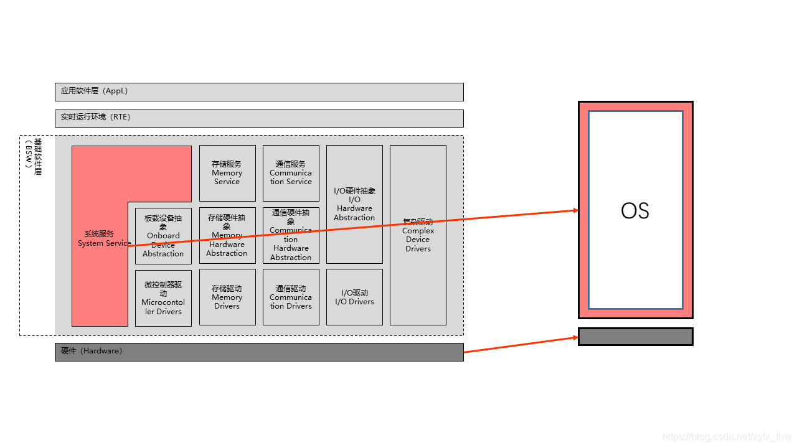
8.2 OS的可扩展性
为了适配从低端到高端的不同 ECU，AutoSAR 把 OS 分成了 4 个可扩展等级（Scalability Class，SC）。四个等级都支持多核、OSEK OS 和调度表；差别在于内存保护只有 SC3/SC4 支持，时间保护只有 SC2/SC4 支持：
| 扩展等级 | 内存保护 | 时间保护 | 说明 |
|---|---|---|---|
| SC1 | 不支持 | 不支持 | 基础等级：多核 + OSEK OS + 调度表 |
| SC2 | 不支持 | 支持 | SC1 + 时间保护：任务运行超时会被强制停止 |
| SC3 | 支持 | 不支持 | SC1 + 内存保护：任务越界访问内存受约束 |
| SC4 | 支持 | 支持 | SC1 + 两者（等价于 SC2 与 SC3 的并集） |
一句话总结：SC2 = SC1 + 时间保护，SC3 = SC1 + 内存保护，SC4 = SC1 + 两者皆有。从安全性角度看，SC4 > SC3 ≈ SC2 > SC1——等级越高保护越全面，但对资源和性能的要求也越高，实际项目中按 ECU 的安全等级需求选择即可。
九、BSW小结
9.1 关于功能与模块
学习 BSW 要抓住一个要点：功能与模块不是一对一的关系。同一个模块可以被多个功能使用——比如 CAN Driver 既属于 Communication 功能，也被 Diagnostic 功能用来收发诊断报文。这就好比人打篮球和敲代码用的是同一双手和同一个大脑，功能不同，器官共用。回顾一下 BSW 的整体细分结构：
9.2 关于实际工程
实际的 AutoSAR 工程由两部分组成：源代码——固定不变，通过 #ifdef 条件编译控制各功能的使能；配置代码——在 DaVinci 中打勾配置后生成，比如配置波特率后生成 #define CanBaudRate XXXX 这样的宏定义。
理论上的工程结构会按 1_AppL、2_RTE、3_BSW 三个目录组织，每个 SWC 对应一个 .c 文件（其中包含被触发的 runnable 函数）：
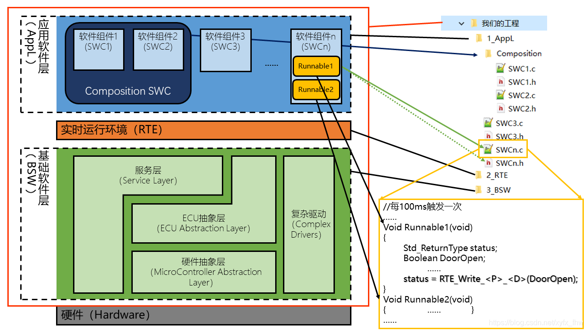
而真实的工程目录有所差异：AppL 下分为 GenData（配置代码，工具生成，不可手改）和 Source（手写代码，唯一可以修改的地方）；BSW 下分为 Bsw（非 MCAL 部分，如 BswM、COM、CAN If、NvM）和 Mcal（底层驱动，如 Adc、Dio、Mcu Drv）：
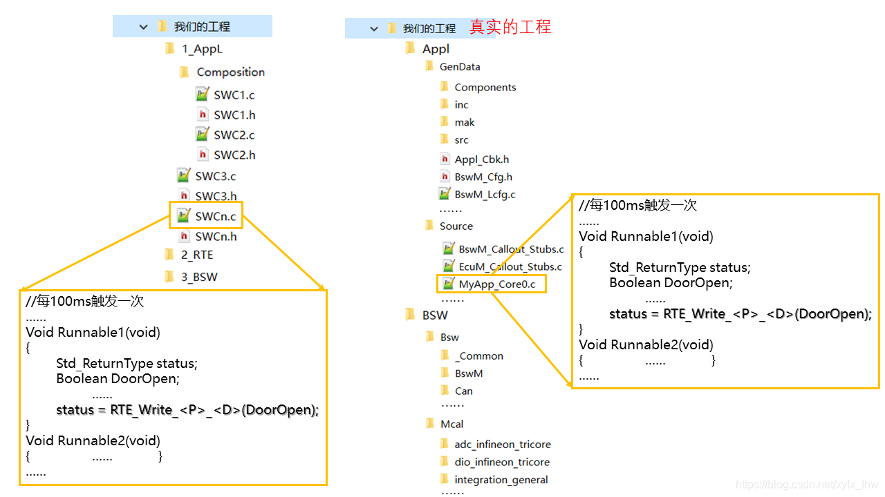
参考来源：CSDN 博主 雪云飞星《AutoSAR系列讲解（入门篇）》4.1 BSW整体介绍 / 4.2 BSW的I/O功能 / 4.3 BSW的Communication功能 / 4.4 BSW的Memory功能 / 4.5 BSW的Mode Management功能 / 4.6 BSW的Watchdog功能 / 4.7 BSW的Diagnostics功能 / 4.8 BSW的OS功能 / 4.9 BSW小结